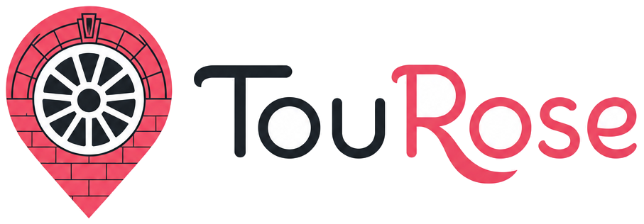
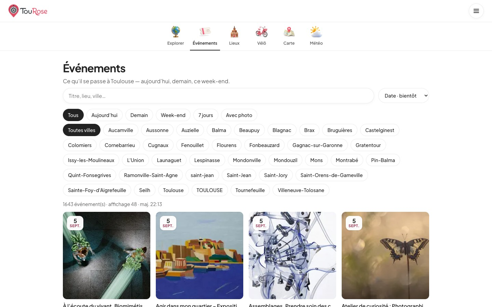
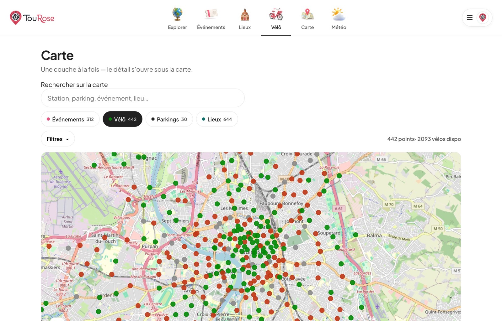
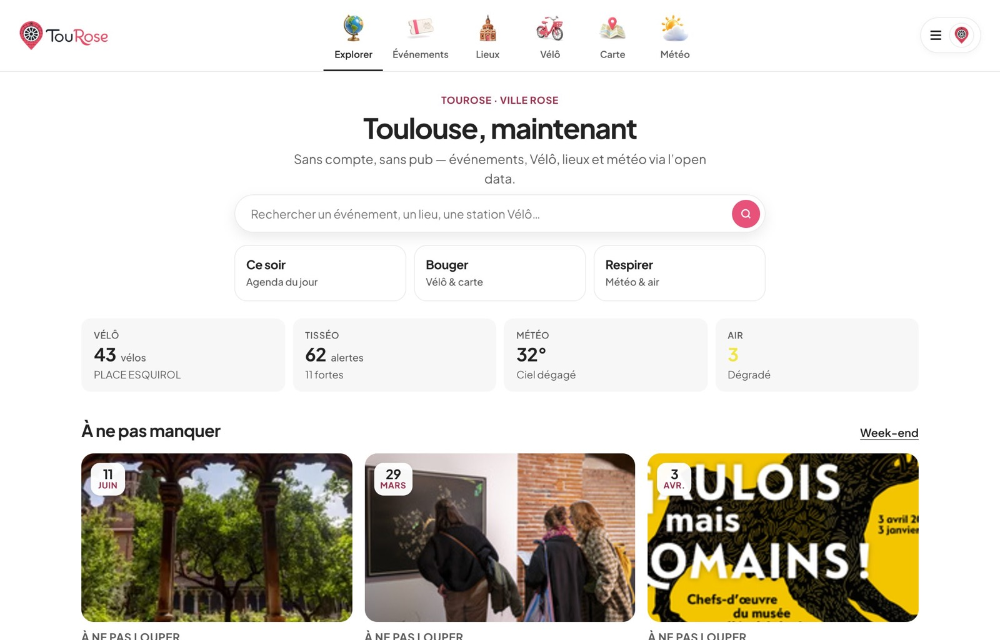

Une mine d’open data.
Et pourtant… savoir quoi faire ce soir reste trop compliqué.
Et pourtant… savoir quoi faire ce soir reste trop compliqué.
Sorties, mobilité, météo, infos locales — tout est éclaté. Le vivant de la ville n’est pas encore vraiment utilisable.


Quoi faire ce soir

Où bouger près de toi

La ville, en un coup d’œil
Projet perso · open data Toulouse · Angular
tourose.netlify.app